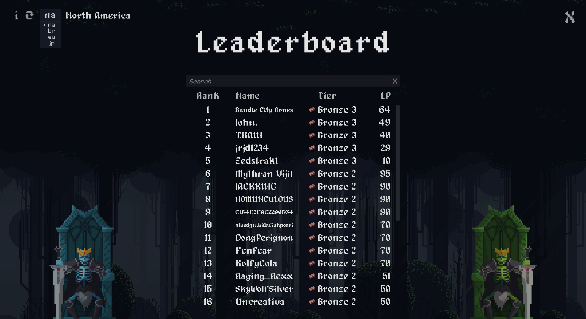

Skeletal Skism 2
Role :
Independent Developer
Platforms : Steam, Windows
Engine : Unity
Language : C#
Development Time : 10 Months (December 2023 - September 2024)
Genres : Multiplayer, PvP, RTT, Strategy, Autobattler, Singleplayer
Platforms : Steam, Windows
Engine : Unity
Language : C#
Development Time : 10 Months (December 2023 - September 2024)
Genres : Multiplayer, PvP, RTT, Strategy, Autobattler, Singleplayer
Game Info
Skeletal Skism 2 is an Online PVP Real-Time Auto Battler, and a sequel to Skeletal Skism (2022).Skism 2 includes many new features/mechanics like a faction system, vault system, a new mercenary unit, an online leaderboard, and more.
For game modes, this sequel adds a singleplayer campaign mode and an improved training mode.
Aside from new mechanics and features, 25 new items were added.
My Experience
Skeletal Skism 2 is the biggest solo project I have worked on, which means I had to learn how to work with and expand on a large codebase. It also improved my ability to polish a game, in terms of not only visuals, but also user experience.The biggest challenge I faced while developing the sequel, like the prequel, was ensuring that the game was deterministic so that desyncs would not occur. I had to consider this whenever I added a new mechanic to the game, but I was able to add the mechanics I had planned: and keep the game deterministic. Lastly, coming up with new and creative ways to make the sequel better than the first game while still being accessible was definitely tricky - but in the end, I think I hit a good balance of complexity and accessibility.
Gallery
